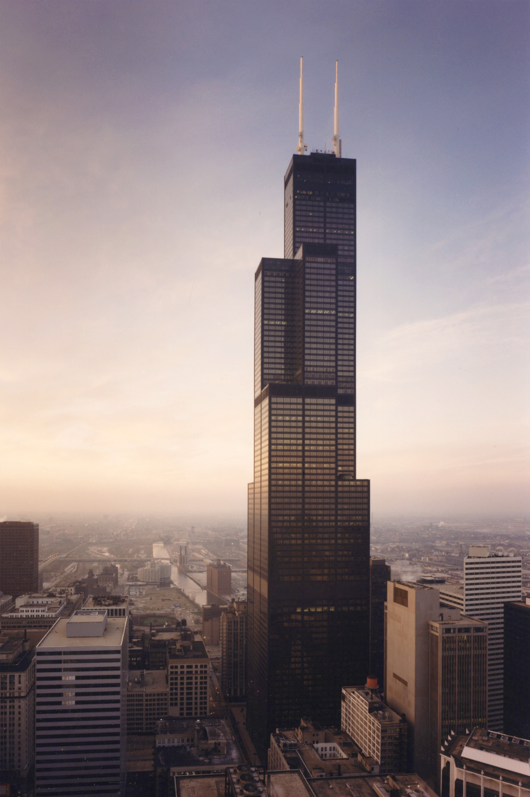
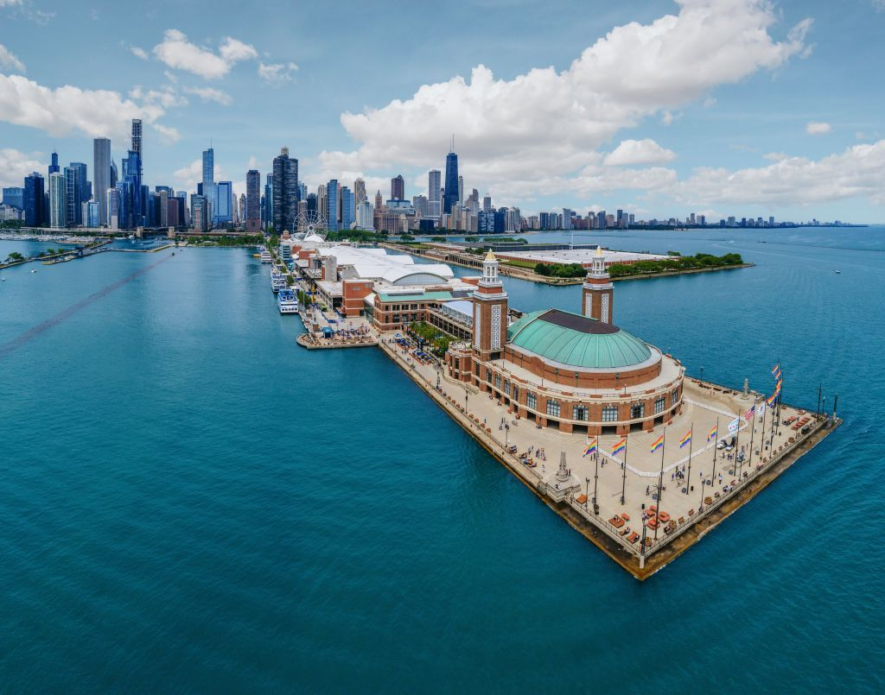

History
The largest city of the American Midwest, Chicago, Illinois, was founded in 1830 and quickly grew to become, as Carl Sandburg’s 1916 poem put it, “Hog Butcher, Tool Maker, Stacker of Wheat, Player with Railroads and Freight Handler to the Nation.” Established as a water transit hub, the city evolved into an industrial metropolis, processing and transporting the raw materials of its vast hinterland.
The name Chicago may have come from a Miami Indian word for the wild leeks that grew on the bank of the short Chicago River. Over the centuries the Miami, Sauk, Fox and Potawatomi tribes all lived in the area. The 1673 Marquette and Jolliet expedition crossed the Great Portage between the Chicago River and the Illinois, 10 miles of flat, often waterlogged ground separating the two great water transit systems of North America, the Great Lakes and the Mississippi Valley. If you want to know more about history of Chicago check HERE!
Famous Landmarks
- Willis Tower
- Trump International Hotel and Tower
- Navy Pier
- Chicago River
Willis Tower captures the vibrancy of the city under one roof. From street to sky, it provides inviting hospitality and memorable experiences. It is an urban destination in the heart of downtown, delivering the best experiences of life and work to residents and visitors of Chicago.
The Trump International Hotel and Tower is a skyscraper condo-hotel in downtown Chicago, Illinois. The building, named for Donald Trump, was designed by architect Adrian Smith of Skidmore, Owings and Merrill. Bovis Lend Lease built the 100-story structure, which reaches a height of 423.2m including its spire, its roof topping out at 357m .

Navy Pier is the place where all of Chicagoland and tourists from around the world have come together since 1995 to enjoy the beauty and the thrills of a day on Lake Michigan. From rides to restaurants, exhibitions to entertainment, shopping to dining cruises and tour boats Navy Pier has it all - in a location unlike any other!There's so much to do in our 50 acres of parks, promenades, gardens, shops, eateries and attractions.Take a ride on our 15-story Ferris wheel.
The Chicago River is the only river system in the world that flows in reverse. The river drains away from Lake Michigan, which provides drinking water to the city. The river was crucial in Chicago's development as a major center of the lumber and meatpacking industries during the nineteenth century. Access through the Illinois & Michigan Canal to the Des Plaines River and the Mississippi River system provided opportunities for trade and shipping throughout the Midwest.

City facts
- Chicago’s nicknames include: The Windy City, City of Big Shoulders, The Second City, The White City, and The City That Works.
- Chicago is the third largest city in the U.S. and is home to an estimated 2.7M residents.
- A unique downtown Chicago feature is its multi-leveled streets, the most well-known of which is Wacker Drive. This double-decker street comprises an upper-level riverfront boulevard and a lower-level roadway for commercial and through traffic.
- You can thank Chicago for the brownie. Bertha Palmer, wife of millionaire hotelier Potter Palmer, cooked up the fudgy squares for the first time at Chicago’s Palmer House, just in time for their debut at the 1893 World’s Columbian Exposition. And this is only one of Chicago’s famous foods.